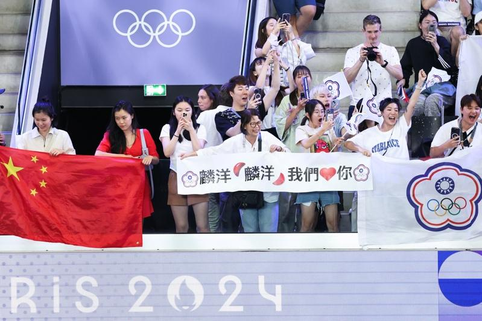

巴黎奥运羽球男双「麟洋配」王齐麟、李洋今天击败中国组合梁伟铿、王昶摘金，央视一再地延后、更改赛事直播时间，直至赛事进行至第2局才切入转播，全程仅播40分钟。
王齐麟、李洋于台北时间4日晚对战梁伟铿、王昶，中国中央电视台（央视）是否直播这场决赛成为中国社群热议焦点。央视4日晚上才更新节目表，可以在「CCTV-16奥林匹克频道」节目表查到「直播：巴黎奥运会-羽毛球男双决赛」。
奥运羽球男双决赛开打后，「CCTV-16奥林匹克频道」仍在转播奥运网球男单决赛，没有切换到羽球赛事。「直播：巴黎奥运会-羽毛球男双决赛」原定晚间10时10分播出，先是延至10时30分，又再后延至11时。
在同个时间点，「CCTV-5体育频道」、「CCTV-5+体育赛事频道」正播出其他赛事或录像画面。中国社群对于直播延后鼓噪，纷纷议论「感觉16套播不了，现在还在直播网球」、「到底播不播啊，开始了吗」、「不播的，对面td（指台独），第一局已经结束了」。
「CCTV-16奥林匹克频道」在赛事进行至第2局时，于晚间11时3分才切换转播羽球赛事，梁伟铿、王昶正以2分落后王齐麟、李洋，央视球评转播时不断地喊「不到最后、不要放弃」、「我们也会一直相信梁伟铿、王昶」。
王齐麟、李洋以21比17、18比21、21比19击败梁伟铿、王昶，央视球评在赛事结束后宣布「转播到此告一段落」，在晚间11时43分结束转播，没有转播接下来的颁奖典礼，全程仅转播40分钟。
「#王昶梁伟铿决赛#」关键字在赛事结束后冲上中国微博热搜第一位，央视新闻官方帐号评论「摘得银牌！很棒！」，民众也大多给予梁伟铿、王昶鼓励，直言「这场压力真的很大」、「不应该让运动员承受这么大的政治压力」。
资深足球评论员石明谨数次参与赛事转播讲评，他在4日接受中央社采访时表示，在奥运赛事转播上，基本上会以有自己国家选手出赛的赛事为第一优先转播，其次是这个国家的热门项目。
对于央视在赛事前夕才更新直播节目表，将巴黎奥运羽球男双决赛列入，石明谨认为，可能与舆论压力有关。
巴黎奥运热话题除了金银还有钻石 奥运场上的求婚名场面真不少「胯下一包」卡到杆子 法选手撑竿跳失败却暴红再战2028？拜尔丝：永不说不 但到时我真的老了金牌内战成饭圈大战？孙颖莎满场欢呼 陈梦收获嘘声4日赛程 网球男单王者诞生、樊振东力拚桌球男单金牌

2024巴黎奥运羽球男双金牌决赛由台湾「麟洋配」王齐麟、李洋交手中国组合梁伟铿、王昶，大批球迷带着应援道具、旗帜进场，但央视只转播了40分钟。(中央社)
巴黎奥运羽球男双「麟洋配」王齐麟、李洋今天击败中国组合梁伟铿、王昶摘金，央视一再地延后、更改赛事直播时间，直至赛事进行至第2局才切入转播，全程仅播40分钟。
王齐麟、李洋于台北时间4日晚对战梁伟铿、王昶，中国中央电视台（央视）是否直播这场决赛成为中国社群热议焦点。央视4日晚上才更新节目表，可以在「CCTV-16奥林匹克频道」节目表查到「直播：巴黎奥运会-羽毛球男双决赛」。
奥运羽球男双决赛开打后，「CCTV-16奥林匹克频道」仍在转播奥运网球男单决赛，没有切换到羽球赛事。「直播：巴黎奥运会-羽毛球男双决赛」原定晚间10时10分播出，先是延至10时30分，又再后延至11时。
在同个时间点，「CCTV-5体育频道」、「CCTV-5+体育赛事频道」正播出其他赛事或录像画面。中国社群对于直播延后鼓噪，纷纷议论「感觉16套播不了，现在还在直播网球」、「到底播不播啊，开始了吗」、「不播的，对面td（指台独），第一局已经结束了」。
「CCTV-16奥林匹克频道」在赛事进行至第2局时，于晚间11时3分才切换转播羽球赛事，梁伟铿、王昶正以2分落后王齐麟、李洋，央视球评转播时不断地喊「不到最后、不要放弃」、「我们也会一直相信梁伟铿、王昶」。
王齐麟、李洋以21比17、18比21、21比19击败梁伟铿、王昶，央视球评在赛事结束后宣布「转播到此告一段落」，在晚间11时43分结束转播，没有转播接下来的颁奖典礼，全程仅转播40分钟。
「#王昶梁伟铿决赛#」关键字在赛事结束后冲上中国微博热搜第一位，央视新闻官方帐号评论「摘得银牌！很棒！」，民众也大多给予梁伟铿、王昶鼓励，直言「这场压力真的很大」、「不应该让运动员承受这么大的政治压力」。
资深足球评论员石明谨数次参与赛事转播讲评，他在4日接受中央社采访时表示，在奥运赛事转播上，基本上会以有自己国家选手出赛的赛事为第一优先转播，其次是这个国家的热门项目。
对于央视在赛事前夕才更新直播节目表，将巴黎奥运羽球男双决赛列入，石明谨认为，可能与舆论压力有关。
巴黎奥运热话题
- 除了金银还有钻石 奥运场上的求婚名场面真不少
- 「胯下一包」卡到杆子 法选手撑竿跳失败却暴红
- 再战2028？拜尔丝：永不说不 但到时我真的老了
- 金牌内战成饭圈大战？孙颖莎满场欢呼 陈梦收获嘘声
- 4日赛程 网球男单王者诞生、樊振东力拚桌球男单金牌